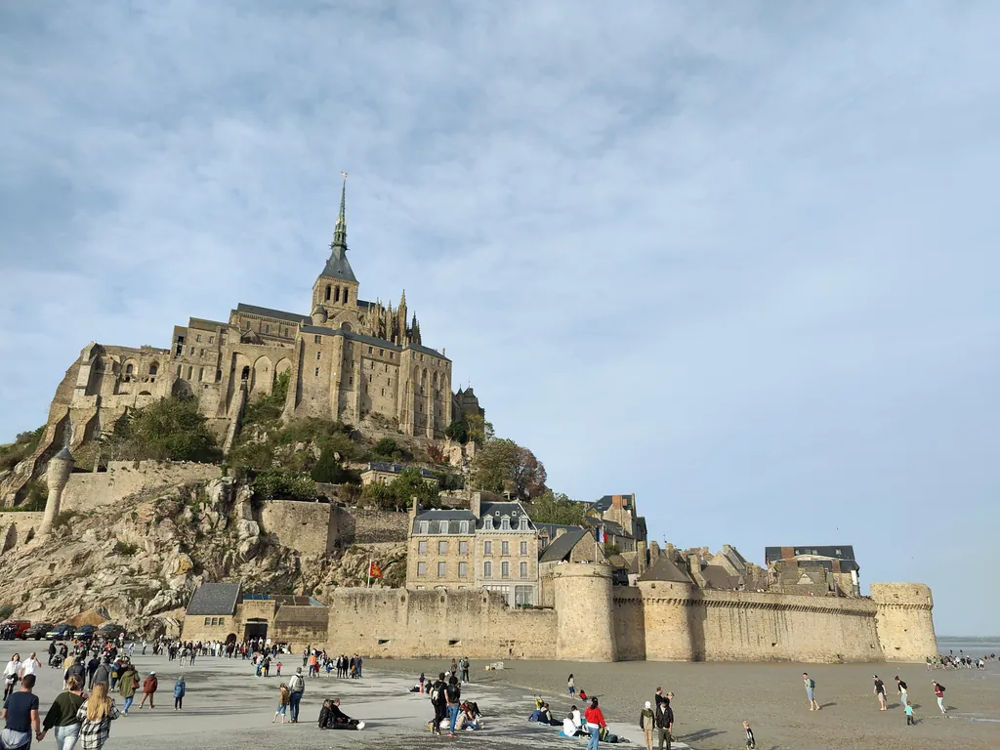

Dotrzeć do Mont-Saint-Michel pieszo po dnie zatoki — boso, jak przez wieki robili pielgrzymi — zamiast mostem, to jedno z najbardziej pamiętnych przeżyć w Normandii. Ale zatoka to nie plaża do spacerów: są tu jedne z najszybszych pływów w Europie, ruchome piaski i mgła, która w kilka minut potrafi zetrzeć brzeg z horyzontu. Dlatego zasada jest prosta i bez wyjątków: przez zatokę chodzi się tylko z licencjonowanym przewodnikiem. Poniżej: jak wygląda przejście, dlaczego nigdy nie wolno iść samemu, co zabrać i jak zarezerwować.
Przejście to podejście do wyspy. Sam Mont zaczyna się przy bramie: po drugiej stronie dalej przez miasteczko i mury prowadzi Cię samodzielny audioprzewodnik po wyspie TouringBee — mapa offline i opowieść na każdym przystanku.
W skrócie
- Nigdy nie idź sam — tylko z certyfikowanym przewodnikiem (guide attesté / accompagnateur).
- To nie straszenie: szybki przypływ, ruchome piaski (lises) i mgła są naprawdę niebezpieczne.
- Przejścia dopasowuje się do pływów, nie do wygody — to woda wyznacza dzień i godzinę.
- Idzie się boso z podwiniętymi spodniami; weź ręcznik i buty na później.
- Rezerwuj z wyprzedzeniem: termin zależy od odpływu, grupy się zapełniają, a przewodnik nie czeka na spóźnionych.
Dlaczego nigdy nie wolno przechodzić samemu
Zatoka wygląda zwodniczo spokojnie — szeroka, płaska równina, przez którą pozornie można po prostu dojść do wyspy. W rzeczywistości spotyka się tu kilka zagrożeń, a każde z osobna jest już poważne.
- Przypływ. Amplituda pływów należy tu do największych w Europie. Woda wraca bardzo szybko po niemal płaskim dnie i najpierw wypełnia kanały za Twoimi plecami, po cichu odcinając drogę powrotu. Stare powiedzenie o morzu, które nadchodzi „z prędkością galopującego konia”, przesadza z prędkością, ale nie z zagrożeniem: według niektórych szacunków na otwartych odcinkach przypływ posuwa się nawet o kilkadziesiąt metrów na minutę.
- Ruchome piaski (lokalnie lises). Miejscami nasiąknięty wodą piasek zamienia się w pułapkę: stopa zapada się i grzęźnie. To nie mit dla turystów — przez wieki zatoka była naturalną obroną twierdzy. Słynna średniowieczna Tkanina z Bayeux przedstawia żołnierzy Wilhelma Zdobywcy grzęznących w ruchomych piaskach u stóp Mont, a oblegające armie nigdy nie zdołały okopać się pod murami, bo muł wokół wyspy był pełen ukrytych ruchomych piasków. Z przewodnikiem takie miejsca są pod kontrolą — stają się nawet częścią przeżycia, bo pokazuje je celowo. W pojedynkę, przy nadchodzącej wodzie, są naprawdę niebezpieczne.
- Mgła i kanały. Widoczność może zniknąć w kilka minut, punkty orientacyjne przepadają, a koryta rzek (Couesnon, Sée i Sélune) i rynny przesuwają się z pływu na pływ. Bezpieczna droga dziś nie jest tą sprzed dnia.
Dlatego przewodnictwo po zatoce jest tu zawodem od stuleci i dlatego przejście z certyfikowanym przewodnikiem to jedyny bezpieczny sposób.
Czym jest przejście z przewodnikiem
To nie to samo, co dojście na wyspę mostem. Przejście przez zatokę to osobna piesza przygoda po dnie morza: idziesz boso po piasku i mule (lokalnie tangue), brodzisz przez płytkie kanały, a po drodze przewodnik pokazuje ruchome piaski, odczytuje ślady pływów i tłumaczy, jak działa zatoka. Wiele tras kończy się przy samym Mont albo prowadzi na wysepkę Tombelaine — rezerwat ptaków naprzeciwko.
Grupy prowadzą certyfikowani przewodnicy, a sama działalność jest we Francji oficjalnie regulowana. Wybierz operatora z licencjonowanymi przewodnikami — przez biuro turystyczne zatoki lub zaufaną platformę rezerwacji.

Trasy i czas przejścia
Jest kilka formatów, a czas zależy od trasy i pływów — dokładne dane potwierdź u operatora na swoją datę:
| Format | Mniej więcej ile | Dla kogo |
|---|---|---|
| Krótki spacer po zatoce | około 2–2,5 godziny, kilka km | na pierwszy raz, rodziny z dziećmi |
| Przejście półdniowe | około 3–5 godzin, ok. 12–15 km | klasyczne przeżycie |
| Wielka trasa z Genêts | około 6–6,5 godziny | wytrwali piechurzy, którzy chcą przejść całość |
Są też przejścia nocne, z Bec d'Andaine. Ceny mocno zależą od formatu i operatora — mniej więcej od 10 do 36 € za osobę, dla dzieci taniej. Dokładne warunki sprawdź u operatora.
Skąd startują
Miejsce zbiórki zależy od operatora i trasy, więc warto je wcześniej potwierdzić:
- Genêts / Bec d'Andaine (Maison de la Baie) po stronie normandzkiej — klasyczne „duże” przejścia.
- Saint-Léonard / Pointe du Grouin du Sud (Vains) — osobna strefa startu z własnym parkingiem „Départ traversées”.
- Niektóre krótkie spacery startują prosto spod Mont-Saint-Michel.
Wielu operatorów prosi o kontakt dzień wcześniej, by potwierdzić dokładne miejsce zbiórki — nie pomijaj tego kroku.
Co zabrać i jak się ubrać
- Idzie się boso i z gołymi nogami — piasek, muł i kanały są częścią trasy. Podwiń spodnie wysoko albo załóż szorty.
- Do plecaka: ręcznik i buty na przebranie, wodę i wiatrówkę (w zatoce prawie zawsze wieje, nawet latem).
- Potrzebna jest przyzwoita kondycja; dzieci tylko z dorosłym i na trasie odpowiedniej długości.
- Zostaw w domu wszystko, czego szkoda pobrudzić lub zamoczyć.
Kiedy iść i jak zarezerwować
Rozkład wyznacza woda: przejścia planuje się wokół odpływu, więc godzina zmienia się codziennie, a sezon trwa głównie od wiosny do jesieni. W praktyce:
- Rezerwuj wcześniej — liczebność grup jest ograniczona, a dobre terminy szybko znikają. Czasem można zapisać się na miejscu do pół godziny przed startem, jeśli są miejsca, ale nie licz na to.
- Przyjdź wcześniej (15–20 minut): termin zależy od pływu, a przewodnik nie czeka na spóźnionych.
- Zajrzyj do kalendarza pływów, by zrozumieć, dlaczego start jest właśnie o tej godzinie — więcej w naszym przewodniku po pływach.
Zarezerwuj przejście z licencjonowanym przewodnikiem
Spacery i przejścia po zatoce z przewodnikiem, godziny wyznacza przypływ — porównaj i zarezerwuj wcześniej.
Po przejściu: sama wyspa
Przejście jest niezapomniane, ale to tylko podejście. Przy bramie zaczyna się druga połowa dnia — sam Mont: Grande Rue, opactwo na szczycie, mury. Aby przejść całą wyspę z jej opowieściami, a nie tylko „wejść i wrócić”, weź samodzielny audioprzewodnik TouringBee po wyspie: 17 przystanków we właściwej kolejności, mapa GPS offline (zasięg na wyspie bywa zawodny) i opowieści napisane przez miejscowych historyków, które sam uruchamiasz w każdym miejscu. To tu ożywają historie o ruchomych piaskach z Tkaniny z Bayeux, o nigdy niezdobytej twierdzy i o wielkim kole, którym średniowieczni budowniczowie wciągali kamień. Jedna płatność, rok dostępu, kilka języków.
Przejdź Mont-Saint-Michel we własnym tempie
17 przystanków, trasa GPS offline, opowieści napisane przez miejscowych historyków — około 2–3 godzin.
Pobierz audioprzewodnik — od €9,99~2–3 godziny · offline · jedna płatność · rok dostępu
Bezpieczeństwo, raz jeszcze (celowo)
- Nigdy nie wchodź do zatoki bez certyfikowanego przewodnika — ani „tylko na krótki spacer”, ani „tylko do najbliższej łachy”.
- Nie idź za ludźmi, których widzisz w oddali: nie wiesz, czy są z przewodnikiem ani co akurat robi przypływ.
- Jeśli idziesz z przewodnikiem, słuchaj go i trzymaj się grupy — on zna ruchome piaski i kanały, ty nie.
Najczęstsze pytania
Czy mogę sam dojść do Mont-Saint-Michel przez zatokę?
Nie. Z powodu szybkich pływów, ruchomych piasków i mgły zatokę przechodzi się tylko z certyfikowanym przewodnikiem. Jeśli chcesz po prostu dostać się na wyspę, idź mostem (passerelle) lub jedź bezpłatną wahadłówką.
Czy ruchome piaski w zatoce są niebezpieczne?
Tak, miejscami. W średniowieczu były nawet częścią naturalnej obrony twierdzy. Z przewodnikiem są pod kontrolą i stanowią część przeżycia; w pojedynkę to realne zagrożenie, zwłaszcza gdy nadchodzi przypływ.
Ile trwa przejście?
Zależy od trasy: krótki spacer trwa około 2–2,5 godziny, przejście półdniowe około 3–5 godzin, a wielka trasa z Genêts około 6 godzin. Dokładny czas potwierdź u operatora na swoją datę.
Czy trzeba iść boso?
Prawie zawsze — piasek, muł i kanały. Weź ręcznik i buty na przebranie.
Kiedy najlepiej iść?
Głównie od wiosny do jesieni; dokładną godzinę wyznacza odpływ, więc zmienia się codziennie. Sprawdź kalendarz pływów i rezerwuj wcześniej.
Co zaplanować dalej
Wniosek
Przejście przez zatokę to chyba najmocniejszy sposób, by dotrzeć do Mont-Saint-Michel: boso po dnie morza, jak pielgrzymi przed wiekami. Ale zatoka wybacza tylko tym, którzy szanują jej zasady — szybki przypływ, ruchome piaski i mgła sprawiają, że samotne przejście jest naprawdę niebezpieczne. Idź z certyfikowanym przewodnikiem, rezerwuj wcześniej, ubierz się na piasek i wodę — a zostanie Ci to w pamięci na lata.
A gdy przejście doprowadzi Cię do bramy, pozwól wyspie poprowadzić Cię dalej — we własnym tempie, ze wszystkimi jej opowieściami.
Niektóre linki na tej stronie są afiliacyjne lub produktowe (GetYourGuide, TouringBee). Jeśli kupisz przez nie, możemy otrzymać niewielką prowizję — bez dodatkowych kosztów dla Ciebie. Nigdy nie wpływa to na nasze rekomendacje. Zobacz nasze informacje o afiliacji.